O texto do documento 69/173/FDIS, futura edição 2 da IEC 61851-1, elaborado pelo comitê técnico IEC TC 69 (Electric road vehicles and electric industrial trucks), foi submetido à votação paralela IEC-CENELEC e aprovado pelo CENELEC como EN 61851-1 em 12 de abril de 2011.
Esta Norma Europeia substitui formalmente a EN 61851-1:2001.
Principais alterações em relação à primeira edição (EN 61851-1:2001):
Esta parte da IEC 61851 aplica-se a equipamentos embarcados (*on-board*) e não-embarcados (*off-board*) destinados à recarga de veículos elétricos rodoviários em tensões nominais de alimentação AC até 1 000 V (conforme IEC 60038) e em tensões DC até 1 500 V, bem como para o fornecimento de energia a serviços auxiliares do veículo quando conectado à rede elétrica.
O termo "Veículo Elétrico" (VE) compreende todos os veículos rodoviários, incluindo veículos elétricos híbridos plug-in (PHEV), que obtêm toda ou parte de sua energia motriz a partir de baterias recarregáveis embarcadas.
Os aspectos cobertos abrangem: características e condições de operação do equipamento de alimentação (EVSE) e da conexão ao veículo; segurança elétrica dos operadores e de terceiros; e características que devem ser atendidas pelo veículo em relação à EVSE AC/DC somente quando o VE estiver aterrado.
Esta norma não se aplica a trólebus, veículos ferroviários, empilhadeiras industriais e veículos projetados primariamente para uso fora de estrada (*off-road*).
Os seguintes documentos são indispensáveis para a aplicação desta norma:
Para os efeitos desta norma, aplicam-se as seguintes definições:
3.1 Isolação básica (basic insulation): Isolação de partes vivas perigosas que provê proteção básica contra choque elétrico.
3.2 Conjunto de cabo (cable assembly): Item de equipamento utilizado para estabelecer a conexão entre o VE e a tomada da EVSE (Casos A e B) ou ao carregador fixo (Caso C). Inclui o cabo flexível e os conectores/plugues.
3.3 Carregador (charger): Conversor de potência que desempenha as funções necessárias para recarga da bateria de tração.
3.4 Recarga (charging): Todas as funções necessárias para condicionar a tensão e corrente da rede AC a níveis regulados para carregar a bateria do VE.
3.6 Condutor piloto de controle (control pilot): Condutor de controle no conjunto de cabo que interliga a caixa de controle ou EVSE ao terra do VE através do circuito de controle do veículo para desempenhar funções de sinalização e segurança.
3.7 Terminal de terra (earth terminal): Ponto de conexão acessível para todas as partes condutivas expostas eletricamente interligadas.
3.8 Veículo elétrico (EV): Qualquer veículo rodoviário impulsionado por motor elétrico que consome corrente de baterias recarregáveis ou outros dispositivos de armazenamento de energia.
3.9 Equipamento de alimentação de VE (EVSE): Conjunto completo de condutores (fase, neutro e PE), acopladores, plugues, tomadas e gabinetes destinados a transferir energia da instalação predial ao VE.
3.11 Caixa de controle no cabo (in-cable control box - IC-CPD): Dispositivo incorporado ao conjunto de cabo (Modo 2) que executa funções de controle piloto e segurança (incluindo RCD).
3.14 Dispositivo de retenção (retaining device): Dispositivo mecânico que mantém o plugue ou conector devidamente acoplado e impede desconexões sob carga não intencionais.
3.15 Acoplador de veículo (vehicle coupler): Meio que viabiliza a conexão manual entre um cabo flexível e o VE. Composto pelo conector do veículo e pela entrada do veículo (*inlet*).
3.17 Função piloto (pilot function): Qualquer meio, eletrônico ou mecânico, que assegura as condições relativas à segurança ou transmissão de dados exigidas para o modo de operação.
3.18 Função de proximidade (proximity function): Meio elétrico ou mecânico em um acoplador para indicar a presença do conector e sua capacidade de corrente ao veículo e à estação.
3.20 Dispositivo diferencial residual (RCD): Dispositivo de manobra mecânica projetado para abrir contatos quando a corrente diferencial residual atinge um valor especificado (proteção contra choque e fuga de corrente).
O VE deve ser conectado à EVSE de tal forma que, em condições normais de operação, a transferência condutiva de energia funcione com total segurança contra riscos térmicos, mecânicos e elétricos.
A tensão nominal de alimentação para equipamentos de recarga AC é de até 1 000 V. Os equipamentos devem operar corretamente dentro de uma faixa de ±10% da tensão nominal padrão. A frequência nominal deve ser 50 Hz ± 1% ou 60 Hz ± 1%.
Um dispositivo de corrente residual (RCD) com características no mínimo equivalentes ao Tipo A (conforme IEC 61008-1 / 61009-1) associado a proteção contra sobrecorrente é obrigatório para todos os modos de recarga:
A conexão de um VE à rede AC utilizando cabo de alimentação e plugue permanentemente fixados ao veículo elétrico.
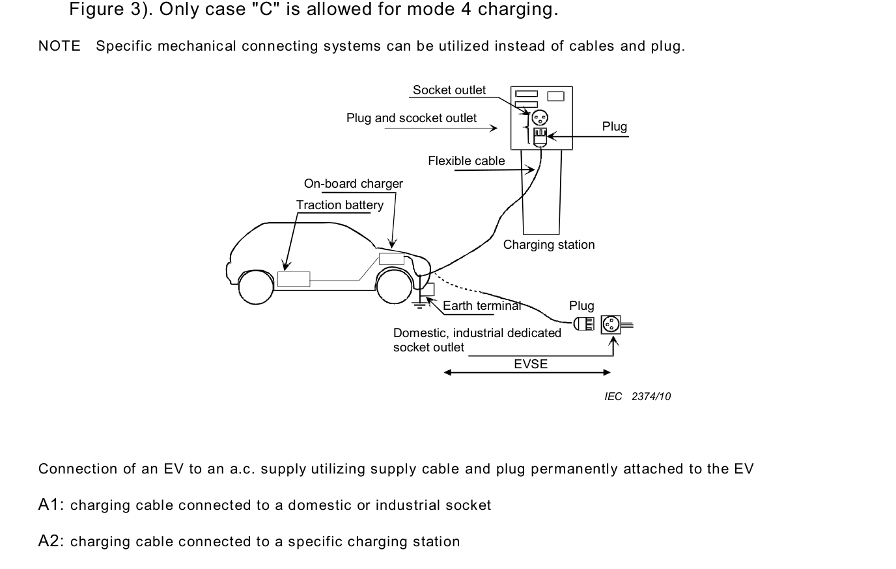
A conexão de um VE à rede AC utilizando um conjunto de cabo destacável com conector de veículo e plugue para conexão na EVSE.
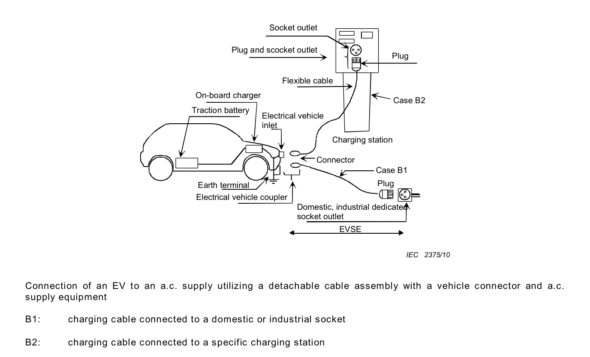
A conexão de um VE à rede AC utilizando cabo de alimentação e conector de veículo permanentemente fixados ao equipamento de alimentação (EVSE). Obrigatório para recarga em Modo 4 (DC).
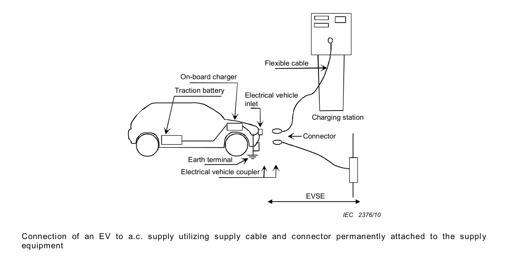
Funções Obrigatórias:
Partes vivas perigosas não podem ser acessíveis em hipótese alguma. O grau de proteção mínimo contra acessibilidade deve atender a IPXXB (dedo de ensaio padronizado).
Em até 1 segundo após a desconexão do VE ou da EVSE da rede de alimentação:
Para sistemas aterrados, a EVSE deve incorporar um dispositivo diferencial residual (RCD) com sensibilidade IΔn ≤ 30 mA, no mínimo do Tipo A (capaz de detectar correntes de fuga AC senoidais e correntes contínuas pulsantes).
Por motivos mandatórios de segurança elétrica contra arcos e choques:
| Contato | Interface Básica Monofásica | Interface Básica Trifásica | Tensão Máxima | Corrente Máxima | Função Elétrica |
|---|---|---|---|---|---|
| 4 | L1 | L1 | 250 V / 480 V | 32 A (até 70 A) | Condutor de Fase 1 |
| 5 | — | L2 | 480 V | 32 A (até 63 A) | Condutor de Fase 2 |
| 6 | — | L3 | 480 V | 32 A (até 63 A) | Condutor de Fase 3 |
| 7 | N | N | 250 V / 480 V | 32 A (até 70 A) | Condutor de Neutro |
| 8 | PE | PE | Classificado p/ falta | Classificado p/ falta | Terra de Proteção |
| 9 | CP | CP | 30 V | 2 A | Controle Piloto (Control Pilot) |
| 13 | PP | PP | 30 V | 2 A | Detecção de Proximidade (Proximity Pilot) |
| Condição de Uso | Elemento | Grau de Proteção Mínimo |
|---|---|---|
| Uso Interno (*Indoor*) | Conector acoplado na entrada do VE | IP21 |
| Uso Interno (*Indoor*) | Plugue acoplado na tomada da EVSE | IP21 |
| Uso Externo (*Outdoor*) | Conector acoplado na entrada do VE | IP44 |
| Uso Externo (*Outdoor*) | Plugue acoplado na tomada da EVSE | IP44 |
| Posição de Estrada (*Road*) | Entrada do VE com tampa fechada | IP55 |
| Desacoplado (*Unmated*) | Conector ou tomada abertos | IP24 |
O corpo da EVSE deve suportar impacto mecânico sem degradação do grau IP nem deformação que toque partes vivas. O teste utiliza esfera de aço maciça de 500 g ± 25 g caindo de altura vertical de 1,3 metros (IEC 60068-2-75).
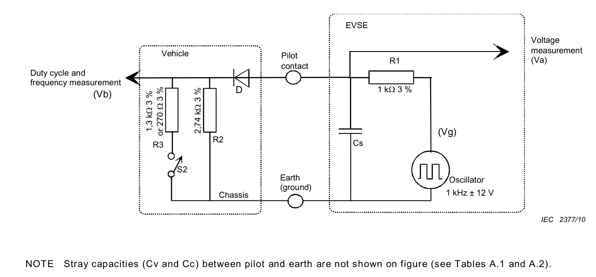
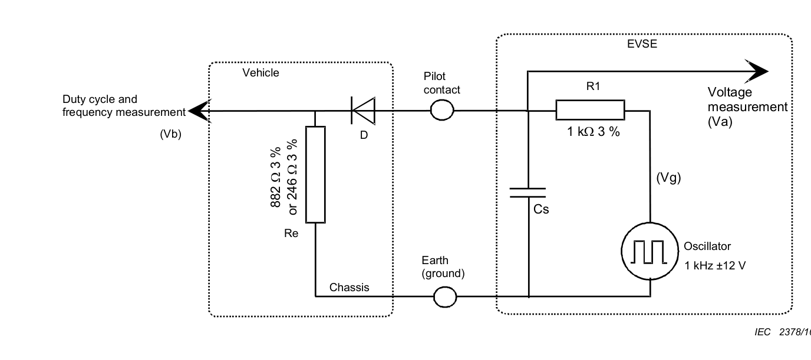
| Parâmetro | Símbolo | Valor Nominal | Unidade |
|---|---|---|---|
| Tensão positiva em circuito aberto | Voch | 12,00 (±0,6) | V |
| Tensão negativa em circuito aberto | Vocl | -12,00 (±0,6) | V |
| Frequência do oscilador | Fo | 1 000 (±0,5%) | Hz |
| Tempo de subida máximo (10% a 90%) | Trg | 2 | μs |
| Tempo de descida máximo (90% a 10%) | Tfg | 2 | μs |
| Tempo de acomodação para 95% estável | Tsg | 3 | μs |
| Resistência equivalente da fonte | R1 | 1 000 ± 3% | Ω |
| Parâmetro | Símbolo | Valor Nominal | Unidade |
|---|---|---|---|
| Resistor permanente do VE | R2 | 2,74 k (±3%) | Ω |
| Resistor comutável s/ ventilação | R3 | 1,3 k (±3%) | Ω |
| Resistor comutável c/ ventilação | R3 | 270 (±3%) | Ω |
| Resistência total s/ ventilação (R2 || R3) | Re | 882 (±3%) | Ω |
| Resistência total c/ ventilação (R2 || R3) | Re | 246 (±3%) | Ω |
| Queda de tensão direta do diodo D1 | Vd | 0,7 (±0,15) | V |
| Capacitância de entrada máxima | Cv | 2 400 | pF |
| Estado | VE Conectado | Chave S2 | Recarga | Tensão Positiva VA | Significado |
|---|---|---|---|---|---|
| A | Não | Aberta | Não | 12 V estático (±1 V) | VE desconectado. |
| B | Sim | Aberta | Não | 9 V (±1 V) | VE conectado; R2 detectado; não pronto. |
| C | Sim | Fechada | Pronto | 6 V (±1 V) | VE pronto; sem ventilação exigida. |
| D | Sim | Fechada | Pronto | 3 V (±1 V) | VE pronto; com ventilação exigida. |
| E | Sim | Aberta | Não | 0 V | Falha, curto CP-PE ou terra desconectado. |
| F | Sim | Aberta | Não | -12 V contínuo | EVSE não disponível ou com falha. |
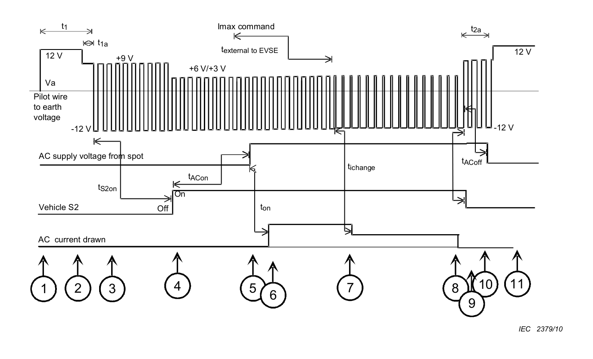
| Passo | Estado | Condições e Ações da Sequência |
|---|---|---|
| 1 | A | Veículo desconectado. Tensão em VA é +12 V DC constante. |
| 2 | B | Cabo conectado ao VE e EVSE. Divisor com R2 abaixa VA para +9 V (B1 sem PWM ou B2 com PWM). |
| 3 | B | EVSE pronta gera PWM de 1 kHz informando corrente pelo Duty Cycle. Diodo D1 confirma VE real (-12 V retido). |
| 4 | B → C/D | VE fecha a chave S2. Tensão de pico cai para +6 V (Estado C) ou +3 V (Estado D). |
| 5 | C/D | EVSE detecta +6V/+3V e fecha os contatores de potência AC energizando o cabo. |
| 6 | C/D | OBC do carro consome corrente respeitando o limite do Duty Cycle. |
| 7 | C/D | Ajuste dinâmico de potência pela EVSE via variação de Duty Cycle (smart charging). |
| 8 | C/D | Fim da carga decidido pelo veículo (bateria cheia). |
| 9 | C/D → B | Veículo abre chave S2 (tensão retorna para +9 V) ou botão do conector é acionado. |
| 10 | B | EVSE detecta Estado B e abre os contatores em menos de 100 ms. |
| 11 | A | Remoção completa do conector; tensão retorna para +12 V; trava mecânica é liberada. |
| Faixa de Duty Cycle | Corrente Máxima Permitida | Equação / Comportamento |
|---|---|---|
| Duty < 3% | 0 A | Recarga proibida. |
| 3% ≤ Duty ≤ 7% | Digital | Comunicação digital requerida (ex: ISO 15118 / DC). |
| 7% < Duty < 8% | 0 A | Recarga proibida. |
| 8% ≤ Duty ≤ 10% | 6 A | Corrente fixa de 6 A. |
| 10% < Duty ≤ 85% | 6 A a 51 A | Corrente [A] = Duty (%) × 0,6 |
| 85% < Duty ≤ 96% | 51 A a 80 A | Corrente [A] = (Duty (%) - 64) × 2,5 |
| 96% < Duty ≤ 97% | 80 A | 80 A máximo. |
| Duty > 97% | 0 A | Inválido / Recarga proibida. |
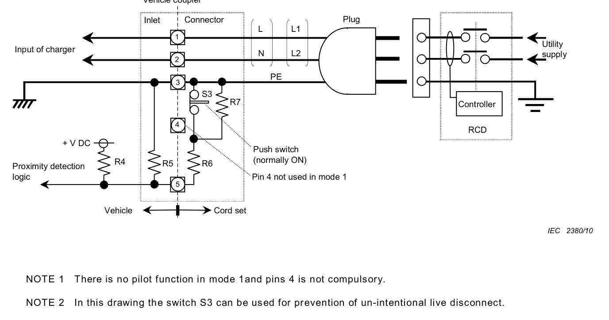
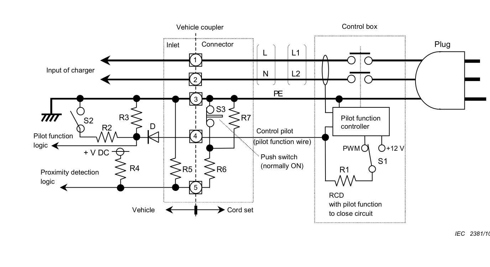
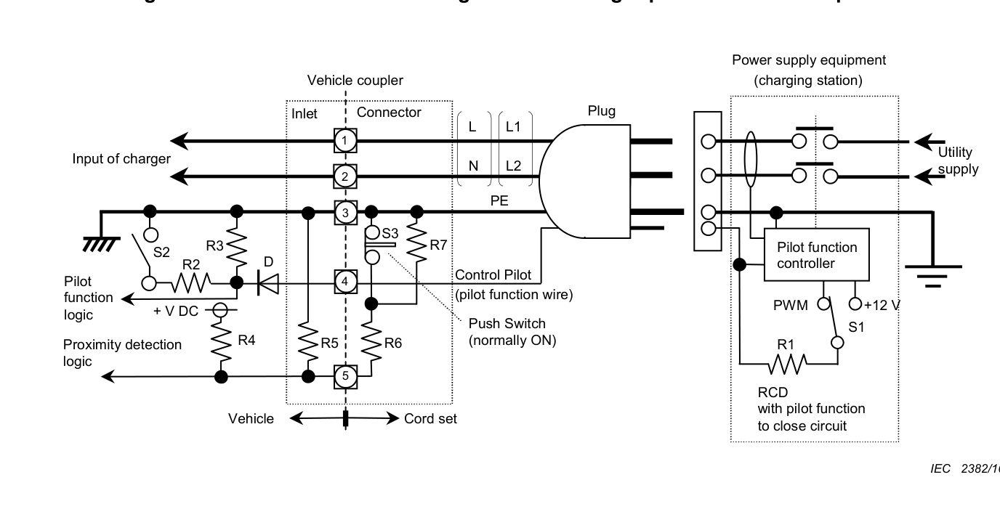
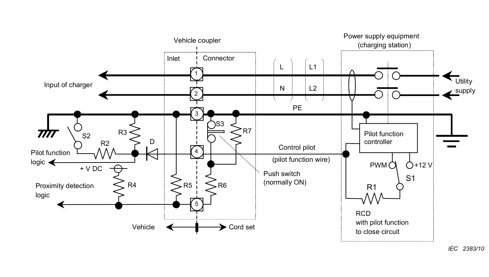
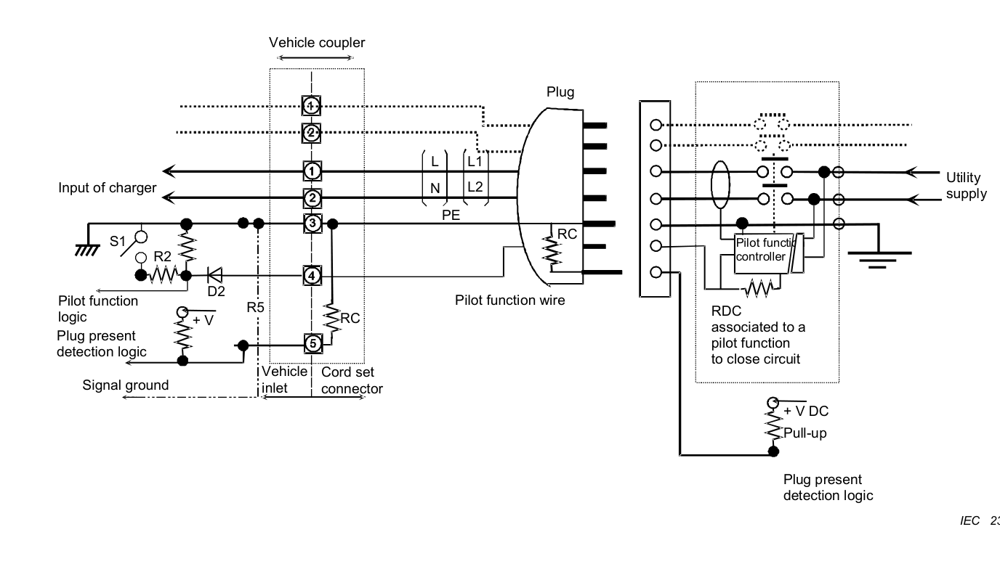
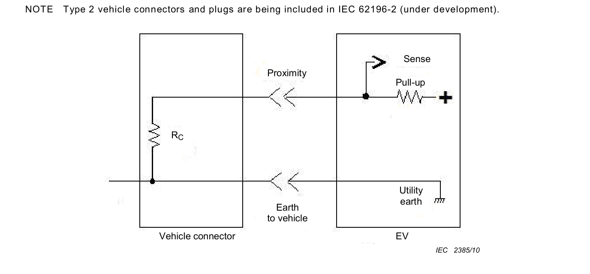
| Capacidade de Corrente | Resistência Nominal Rc (±3%) | Potência Nominal Mínima |
|---|---|---|
| 13 A | 1 500 Ω (1,5 kΩ) | ≥ 0,5 W |
| 20 A | 680 Ω | ≥ 0,5 W |
| 32 A | 220 Ω | ≥ 0,5 W |
| 63 A / 70 A | 100 Ω | ≥ 0,5 W |
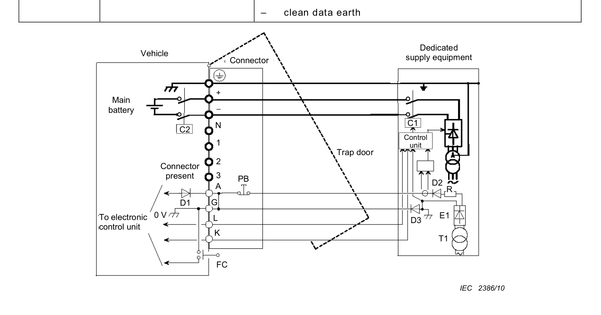
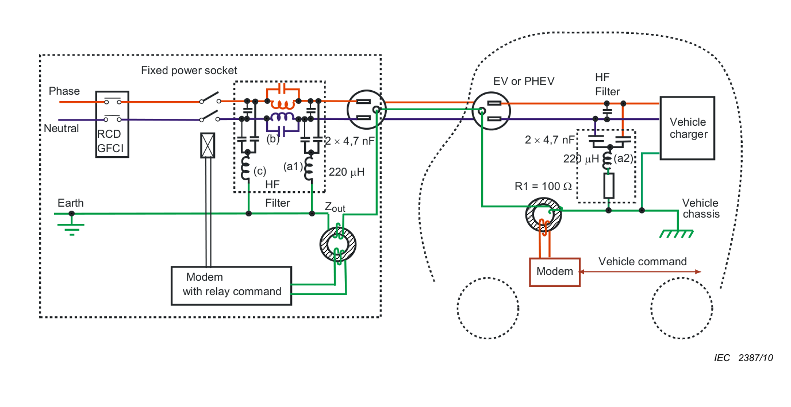